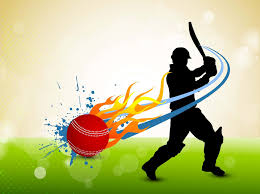

Ipl Tournament
2024

The Indian Premier League (IPL) (also known as the TATA IPL for sponsorship reasons) is a men's Twenty20 (T20) cricket league that is annually held in India. The league is contested by ten city-based franchise teams. The BCCI founded the league in 2007. Format. The teams are divided into two groups (A and B) of five teams. Each team plays twice against all five teams in the other group (home and away), and once against all four of the teams in its own group. All teams play seven home and seven away games.

Royal Challengers Bangalore, also known as RCB, is the Bengaluru-based cricket franchise of the Indian Premier League (IPL). The team is owned by United Spirits Limited, a Diageo Group company. RCB rose from a bottom-two finish in 2008 to end as runners-up in 2009 and semi-finalists in 2010. The full form of RCB is Royal Challengers Bangalore. It is a team in the Indian Premier League (IPL), a professional Twenty20 cricket league in India.
The team is owned by India Cements through its Chennai Super Kings Cricket Limited holding company. They have won a record five IPL titles (shared with Mumbai Indians), appeared in a record 10 finals and have qualified for the playoff stages 12 times out of the 14 seasons they have played, more than any other team. Chennai Super Kings (CSK) secured an IPL 2023 Playoffs spot after it beat Delhi Capitals (DC) by 77 runs at the Arun Jaitley Stadium in Delhi on Saturday. MS Dhoni's men became the second team to secure a place in the knockouts behind defending champion Gujarat
Mumbai Indians are a professional franchise cricket team based in Mumbai, Maharashtra, that competes in the Indian Premier League. Following the announcement of making Hardik Pandya replace Rohit Sharma as skipper, 5-time IPL winning franchise Mumbai Indians lost over 400k followers on social media. Now with the non-surety of Hardik Pandya to play in the IPL 2024, netizens have taken a swipe on social media
Delhi Capitals (formerly Delhi Daredevils) are a professional franchise cricket team based in Delhi that plays in the Indian Premier League (IPL). The franchise is jointly owned by the GMR Group and the JSW Sports. The team's home ground is Arun Jaitley Stadium (formerly Feroz Shah Kotla), located in New Delhi. Ninth placed SRH can, like KKR, at best tie for fourth spot on points and their chances of managing even that are just 7%. 10. DC's shot at the play-offs is now officially over. They became the first team to be eliminated following Saturday's loss to PBKS.
IPL 2020 Player Of The Tournament

IPL 2021 Player Of The Tournament
IPL 2022 Player Of The Tournament
IPL 2023 Player Of The Tournament